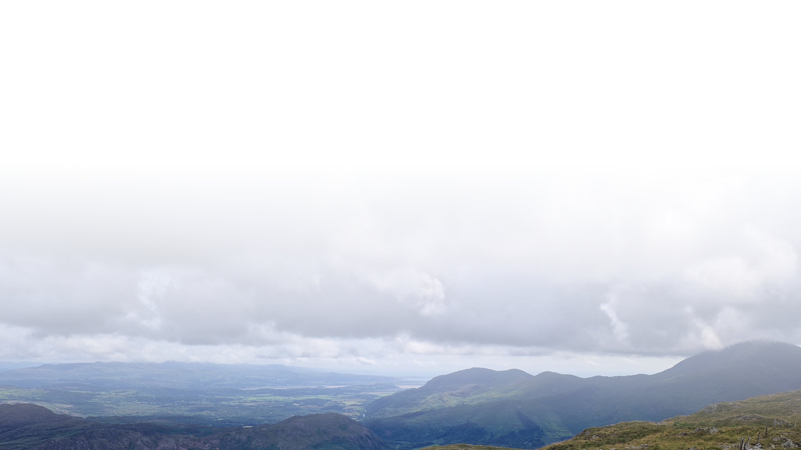
Introduction to AI and machine learning
AI for environmental data, Gothenburg 2026
Olof Mogren, RISE Research Institutes of Sweden
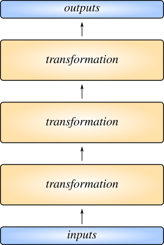
Deep learning
Deep artificial neural networks
- Sequential transformations of data
- Trained together (backpropagation)
- Transformations are gradually changed
Hierarchical representations
- Each layer outputs a vector
- Deeper into network:
Enough units -> universal approximation
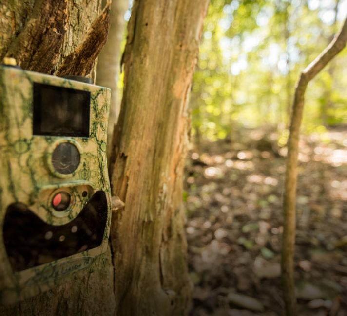
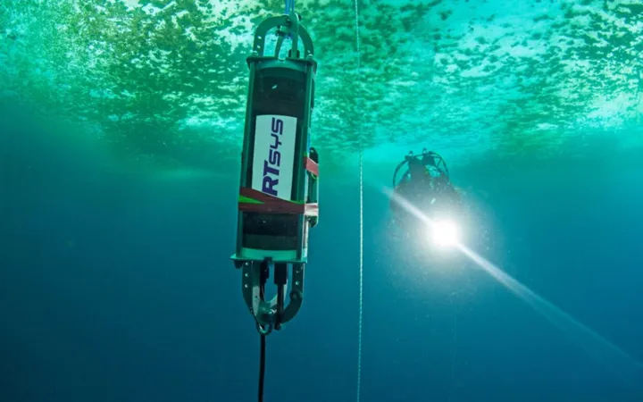
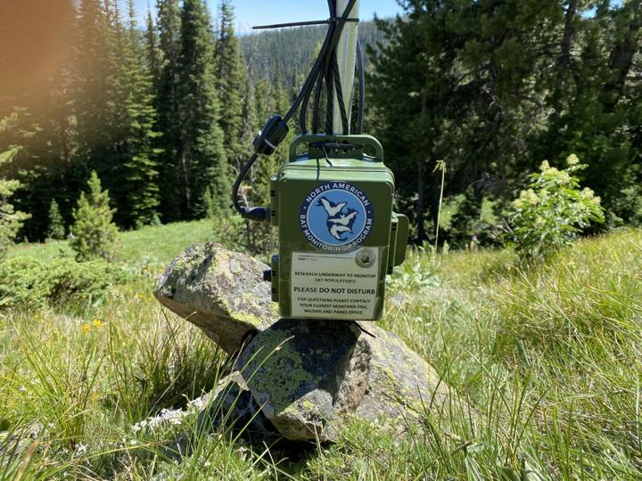
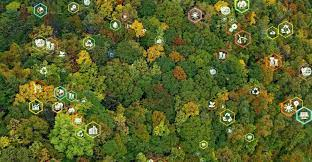
Images, sounds, language, other sensors
- Remote sensing
- Satellite imagery
- Drone footage
- Sound recordings
- Video data
- Other sensors
- Water flow sensors
- Atmospheric measurements
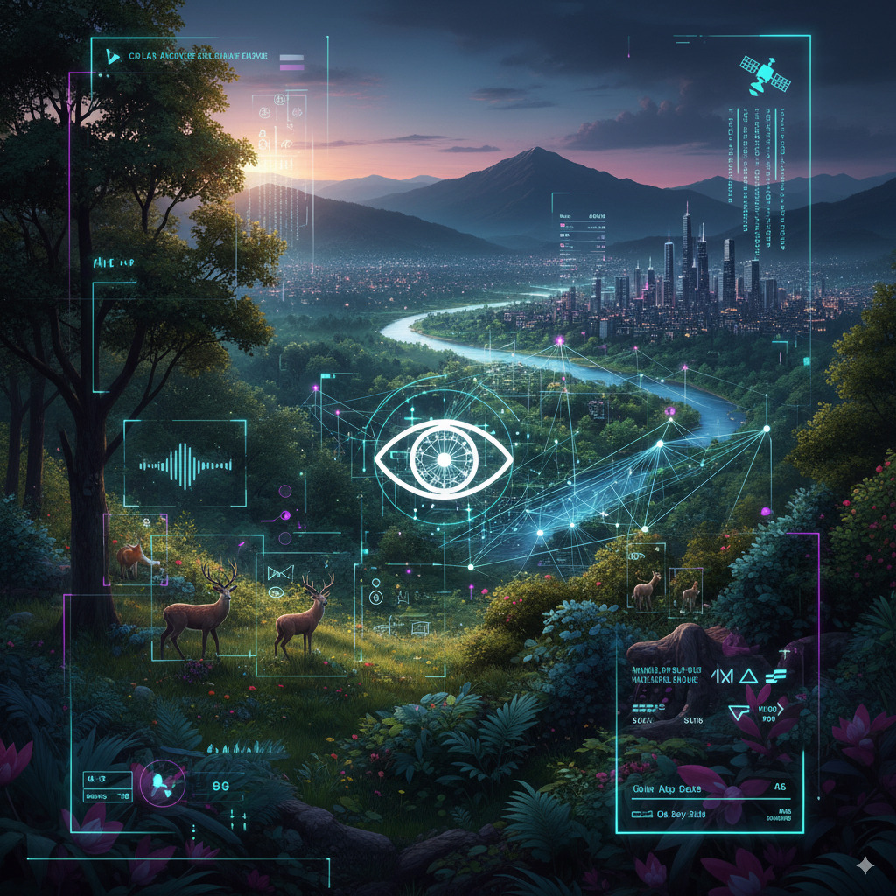
Percieving the world with AI
- Computer Vision
- Classification, segmentation, object detection, image generation
- Machine Listening
- Event detection, species identification, etc
- Sensor Modelling
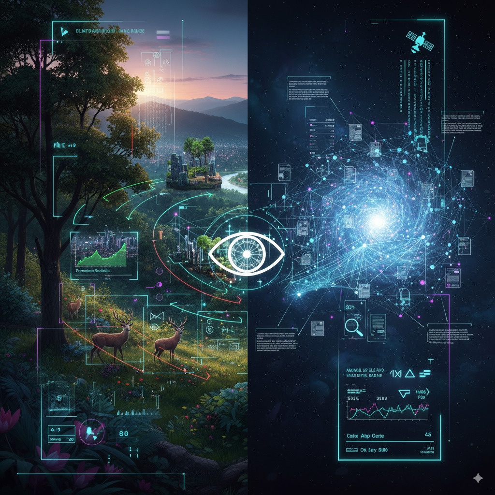
Prediction and discovery with AI
- Short-term prediction, e.g. flood risk
- Long-term, e.g. climate modeling
- Knowledge and natural language processing
- e.g. data mining, aggregating environmental data,
- summarization, information extraction
Natural language processing (NLP)
- Translation
- Summarization
- Generating text
- Information extraction
- Conversational AI
Challenges, limitations, and risks
- Bias, "hallucinations"
- Interpretability
- Explainability/trust
- Energy use of AI
- Data quality
- Uncertainty quantification
AI for climate adaptation and mitigation
AI for environmental data, Gothenburg 2026
Olof Mogren, RISE Research Institutes of Sweden
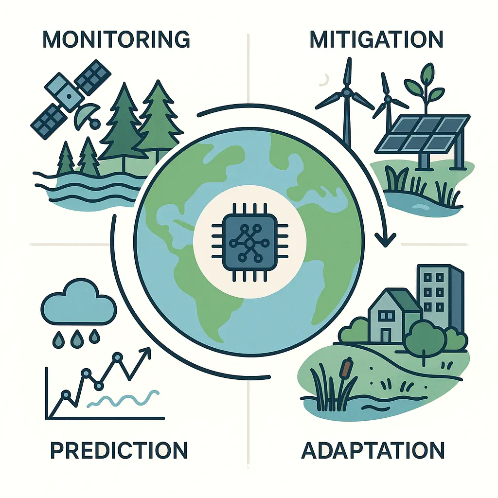
Climate change
A multifaceted challenge benefiting from AI at every level
- Monitoring
- remote sensing, sensor networks, bioacoustics
-
Mitigation
- Emission reduction and carbon sequestration
-
Adaptation
- Prediction
- Weather systems and extreme events
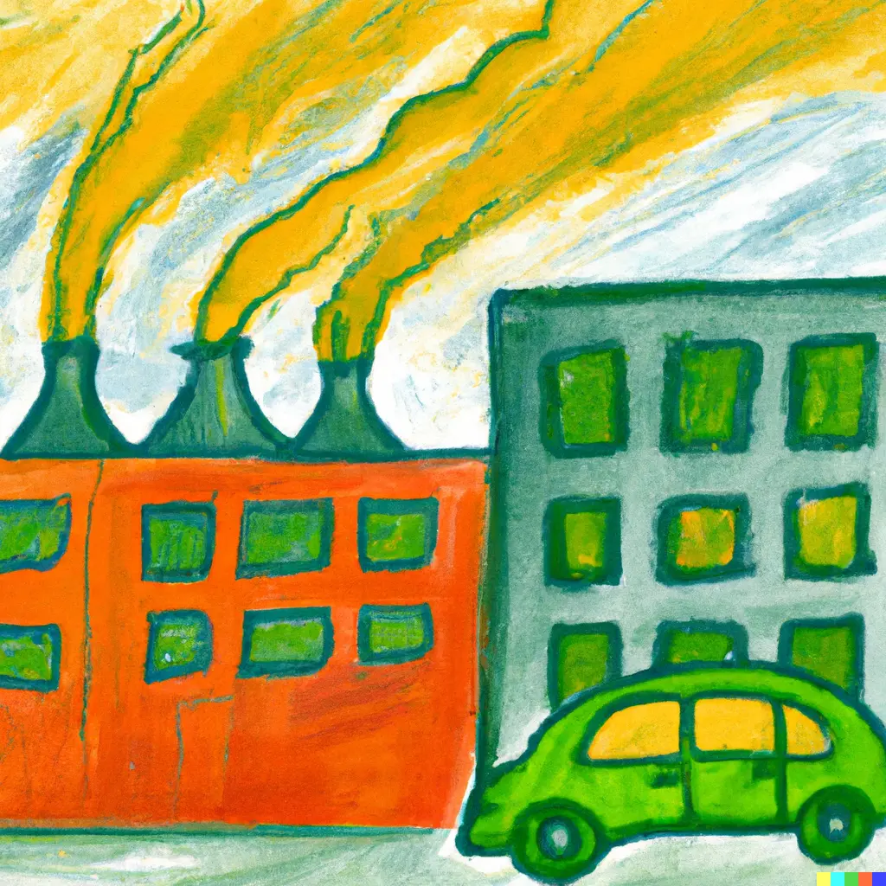
Both mitigation & adaptation necessary
- We are heading for 2°C
- Mitigation is essential to slow warming and reduce long-term risks
- Adaptation is unavoidable, impacts are already here and will intensify
- Neither is sufficient alone
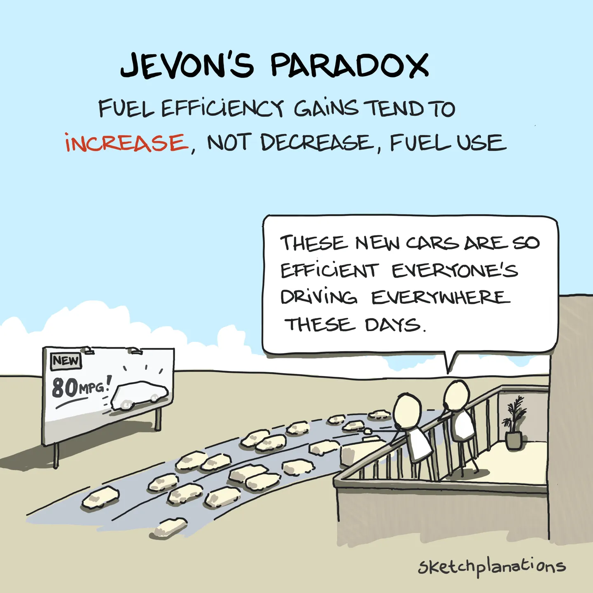
Indirect environmental effects of AI
- AI can make us more efficient
- Fast-fashion is already a burden to the environment
- Jevon's paradox/rebound effects
Cement: 8% of global GHG emissions
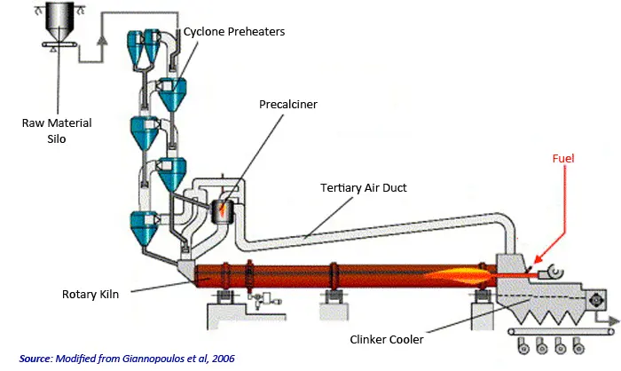
AI optimizing cement production
- Lessen demand of petroleum coke
- Optimize air temperature for the clinker kiln
- Less fuel is needed
Agriculture, forestry, land use (AFOLU)
-
~22% of global GHG emissions
- Main drivers:
- Deforestation
- Methane from livestock
- Fertilizer use (N₂O)
AI for agriculture and forestry
- Monitoring land use change (remote sensing)
- Optimizing fertilizer use
- Improving livestock management
- Forest management & carbon accounting
Optimizing fertilizer use
- Suggesting N,P,K dosage, tillage, timing
- Based on environmental variables
AI for climate-smart agriculture
- Precision irrigation and yield prediction
- Pest/disease detection under climate stress
- Example: ML-based decision support for smallholder farmers
AI for building optimization
- Design and materials
- Passive designs
- Heating/cooling load modeling
- Sustainable or recycled materials
- Construction and demolition
- Reduce material waste
- Optimize low-tech cooling/heating
- Operations
- Smart grid coordination
- Adaptive reuse of spaces
Planning urban green areas
- Optimize conversion of grey areas to green areas
- 3-30-300
- Climate resilience and biodiversity
- Cost efficiency
- Satellite data, ML, GIS
- Cooling, biodiversity, public health, and carbon benefits
- RISE, SLU, Malmö, Uppsala
Detecting potential areas
for green transformation
- Identify grey spaces
- Identify areas where green transformation
- is the most useful
- is possible
AI for urban green infrastructure
- Quantifying urban green infrastructure in Örebro (left)
- Algorithmic green infrastructure
Algorithmic green infrastructure
- Using remote sensing, geospatial data, environmental data
- Scenario planning
- Provide urban planners with AI-optimised layouts that balance multiple objectives (cooling, water, biodiversity, equity).
AI for environmental monitoring
AI for environmental data, Gothenburg
Olof Mogren, RISE Research Institutes of Sweden
Above ground biomass estimation
Remote sensing for deprived urban areas
Malaria mapping
Cloud thickness estimation
Robustness in ML for remote sensing
- Existing state-of-the art models
sensitive to pixel perturbations
- Relies on texture, context
- Not strong reliance on color
- Work published at ML4RS Workshop
at ICLR 2024
Robustness
of state-of-the-art earth observation models
Species distribution modeling
Habitat suitability
- ~8.7M species, only ~100k have mapped ranges
- Traditional SDMs (e.g. MaxEnt, HMSC)
- need environmental covariates
- struggle at global scale
- Citizen science*: >10 000 000 presence-only observations
- Can we predict species ranges with only locations (lat,lon)?
Learned location embeddings
Remote sensing for species distribution
Remote sensing for species distribution
Satellite data + environmental variables better than either only sat or only env
Foundation models for species distribution
Auklab
Unique field site at Stora Karlsö
Bird species identification
- Modelling sound using
spectrograms and convolutional
neural networks
- Altitude and location information improves
results
Active learning and active annotation
Letting data modalities inform each other
- Use vision models trained on synced video → provide event labels
- Transfer this knowledge to audio-only recordings
- Detect events and behaviours from soundscapes alone
- Reduce annotation workload by leveraging cross-modal supervision
- Unlock long-term monitoring where only audio data is available
AI for prediction & Earth system modelling
AI for environmental data, Gothenburg
Olof Mogren, RISE Research Institutes of Sweden
Forecasting using machine learning
- Next word prediction
- Recommendation systems
- Vehicle trajectory estimation
- Energy load forecasting
- Predictive maintenance
- Yield prediction
- Traffic forecasting
- Reinforcement learning: distribution of expected future states
- Wildfire spread
Recurrent neural networks
Flood risk: a combination of two models
global weather forecasts, river gauge measurements, satellite imagery
RISE Learning Machines Seminars
Dense stream flow prediction
Process-based physical modeling
- Navier-Stokes equations
- Particle-based or mesh-based
- Computationally heavy
FourCastNet, Pangu-Weather, GraphCast
ECMWF AI Forecasting System
Solutions build on years of progress
- Graph neural networks
- Transformer (attention) architecture
- Diffusion models
Diffusion models: Gencast
AI for weather extreme estimation